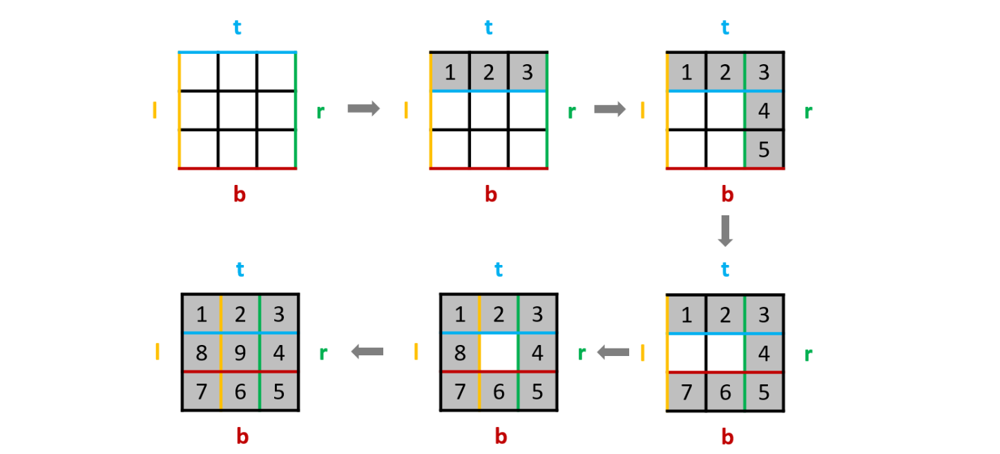

1. 双指针
原地修改数组（快慢指针）
27. 移除元素
给你一个数组 nums 和一个值 val，你需要 原地 移除所有数值等于 val 的元素，并返回移除后数组的新长度。
不要使用额外的数组空间，你必须仅使用 O(1) 额外空间并 原地 修改输入数组。
元素的顺序可以改变。你不需要考虑数组中超出新长度后面的元素。
输入：nums = [3,2,2,3], val = 3
输出：2, nums = [2,2]
解释：函数应该返回新的长度 2, 并且 nums 中的前两个元素均为 2。你不需要考虑数组中超出新长度后面的元素。例如，函数返回的新长度为 2，而 nums = [2,2,3,3] 或 nums = [2,2,0,0]，也会被视作正确答案。解题：
==这题是一个隐形的快慢指针：for循环相当于一个快指针，idx慢指针==
设定变量 idx，指向待插入位置。idx 初始值为 0。
遍历数组：
- 如果当前元素 x 与移除元素 val 相同，那么跳过该元素。
- 如果当前元素 x 与移除元素 val 不同，那么我们将其放到下标 idx 的位置，并让 idx 自增右移。
得到的结果则是全部不为val的元素
class Solution {
public int removeElement(int[] nums, int val) {
int idx = 0;
for(int x: nums) {
if (x != val) nums[idx++] = x;
}
return idx;
}
}26. 删除有序数组中的重复项
给你一个 升序排列 的数组 nums ，请你 原地 删除重复出现的元素，使每个元素 只出现 k 次 ，返回删除后数组的新长度。元素的 相对顺序 应该保持 一致 。然后返回 nums 中唯k元素的个数。
考虑 nums 的唯k元素的数量为 n ，你需要做以下事情确保你的题解可以被通过：
- 更改数组 nums ，使 nums 的前 n 个元素包含唯k元素，并按照它们最初在 nums 中出现的顺序排列。nums 的其余元素与 nums 的大小不重要。
- 返回 n 。
输入：nums = [1,1,2]，k = 1
输出：2, nums = [1,2,_]
解释：函数应该返回新的长度 2 ，并且原数组 nums 的前两个元素被修改为 1, 2 。不需要考虑数组中超出新长度后面的元素。解题：
k表示保留k位重复数字
假设有样例：[3,3,3,3,4,4,4,5,5,5]，k=2
- 设定变量 idx，指向待插入位置。idx 初始值为 0，目标数组为 []
- 首先我们先让前 2 位直接保留（idx < k）。idx 变为 2，目标数组为 [3,3]
- 继续往后遍历，此时idx < k不满足。nums[2-2] != 3不满足，跳过，继续遍历。
- 直到4，nums[2-2] != 4满足。idx=3，目标数组为 [3,3,4]
- nums[3-2] != 4满足。idx=4，目标数组为 [3,3,4,4]
- nums[4-2] != 4不满足。跳过
当整个数组被扫描完，最终我们得到了目标数组 [3,3,4,4,5,5] 和 答案 idx 为 6。
总结：
==for循环快指针，idx慢指针==
idx < k：决定在数组前几位过滤掉多余的重复数字（因为此时idx=0或者<k，idx-k得出的是负数）
nums[idx-k] != x：使得数组中每个数字保持k个的最大重复率==（简化理解：假设k=1时，即为和前一个比较是否相等）==
class Solution {
public int removeDuplicates(int[] nums) {
return process(nums, 1);
}
public int process(int[] nums, int k) {
int idx = 0;
for(int x: nums) {
if(idx < k || nums[idx-k] != x) nums[idx++] = x;
}
return idx;
}
}283. 移动零
给定一个数组 nums，编写一个函数将所有 0 移动到数组的末尾，同时保持非零元素的相对顺序。
请注意 ，必须在不复制数组的情况下原地对数组进行操作。
输入: nums = [0,1,0,3,12]
输出: [1,3,12,0,0]解题：
- 创建快指针 i 和慢指针 j。
- i 负责往前遍历
- j 用来记录当前有多少 非0 元素。即遍历的时候每遇到一个 非0 元素就将其往数组左边挪，第一次遍历完后，j 指针的下标就指向了最后一个 非0 元素下标。
- 第二次遍历，起始位置就从 j 开始到结束，将剩下的这段区域内的元素全部置为 0。

class Solution {
public void moveZeroes(int[] nums) {
int j = 0;
for (int i = 0; i < nums.length; i++) {
if (nums[i] != 0) {
nums[j] = nums[i];
j++;
}
}
for (int i = j; i < nums.length; i++) {
nums[i] = 0;
}
}
}非原地修改（左右指针）
977. 有序数组的平方
给你一个按 非递减顺序 排序的整数数组 nums，返回 每个数字的平方 组成的新数组，要求也按 非递减顺序 排序。
输入：nums = [-4,-1,0,3,10]
输出：[0,1,9,16,100]
解释：平方后，数组变为 [16,1,0,9,100]。排序后，数组变为 [0,1,9,16,100]解题：
使用两个指针i，j分别指向位置 0 和 n−1，每次比较两个指针对应的数。
创建一个新数组，选择较大的那个逆序放入数组并移动指针。
结束条件：i <= j
class Solution {
public int[] sortedSquares(int[] nums) {
int length = nums.length;
int[] arrs = new int[length];
for(int i = 0, j = length - 1, pos = length - 1; i <= j; ) {
if (nums[i] * nums[i] > nums[j] * nums[j]) {
arrs[pos] = nums[i] * nums[i];
i++;
} else {
arrs[pos] = nums[j] * nums[j];
j--;
}
pos--;
}
return arrs;
}
}关键点：原数组中的元素平方最大值一定产生在原数组的最左边或者最右边。
581. 最短无序连续子数组
给你一个整数数组 nums ，你需要找出一个 连续子数组 ，如果对这个子数组进行升序排序，那么整个数组都会变为升序排序。
请你找出符合题意的 最短 子数组，并输出它的长度。
输入：nums = [2,6,4,8,10,9,15]
输出：5
解释：你只需要对 [6, 4, 8, 10, 9] 进行升序排序，那么整个表都会变为升序排序。解题：
把这个数组分成三段，左段和右段是标准的升序数组，中段数组虽是无序的，但满足最小值大于左段的最大值，最大值小于右段的最小值。

目标找中段的左右边界，我们分别定义为begin 和 end;
nums[end]不可能是【begin，end】中的最大值（否则应该将nums[end]并入右端数组）nums[begin]不可能是【begin，end】中的最小值（否则应该将nums[begin]并入左端数组）
很明显:
- ==【begin，end】中的最大值
等于【0，end】中的最大值，设其为max== - ==【begin，end】中的最小值
等于【begin， nums.length-1】中的最小值，设其为min==
那么有：
nums[end]<max<nums[end+1]<nums[end+2]< … 所以说，从左往右遍历，最后一个小于max的为右边界nums[begin]>min>nums[begin-1]>nums[begin-2]> … 所以说，从右往左遍历，最后一个大于min的为左边界
class Solution {
public int findUnsortedSubarray(int[] nums) {
//初始化
int len = nums.length;
int min = nums[len-1];
int max = nums[0];
int begin = 0, end = -1;
//遍历
for(int i = 0; i < len; i++){
if(nums[i] < max){
end = i; // 出现后续数字小于max，表明[max, i]向下走了，肯定不会在右段中，因此更新end
}else{
max = nums[i]; //从左到右维持最大值，max始终为已遍历过的数中最大值
}
if(nums[len-i-1] > min){
begin = len-i-1; // 出现后续数字大于min，表明[i, min]向下走了，肯定不会在左段中，因此更新begin
}else{
min = nums[len-i-1]; //从右到左维持最小值，min始终为已遍历过的数中最小值
}
}
return end-begin+1;
}
}接水问题
42. 接雨水
给定 n 个非负整数表示每个宽度为 1 的柱子的高度图，计算按此排列的柱子，下雨之后能接多少雨水。

输入：height = [0,1,0,2,1,0,1,3,2,1,2,1]
输出：6
解释：上面是由数组 [0,1,0,2,1,0,1,3,2,1,2,1] 表示的高度图，在这种情况下，可以接 6 个单位的雨水（蓝色部分表示雨水）。解题：
每一列雨水的高度，取决于，该列 左侧最高的柱子和右侧最高的柱子中 最矮的那个柱子的高度。
例如求列4的雨水高度：
列4 左侧最高的柱子是列3，高度为2（以下用l_max表示）。列4 右侧最高的柱子是列7，高度为3（以下用r_max表示）。列4 柱子的高度为1（以下用height表示）
那么列4的雨水高度为 列3和列7的高度最小值减列4高度，即： min(l_max, r_max) - height。
==双指针法：边走边算==
l_max 是 height[0..left] 中最高柱子的高度，r_max 是 height[right..end] 的最高柱子的高度。
- 计算 left 处的雨水高度
此时的 l_max 是 left 指针左边的最高柱子，但是 r_max 并不一定是 left 指针右边最高的柱子。但已经知道 l_max < r_max 了，至于这个 r_max 是不是右边最大的，不重要。
class Solution {
int trap(int[] height) {
int left = 0, right = height.length - 1;
int l_max = 0, r_max = 0;
int res = 0;
while (left <= right) {
l_max = Math.max(l_max, height[left]); // height[0..left] 中最高柱子的高度
r_max = Math.max(r_max, height[right]); // height[right..end] 中最高柱子的高度
// res += min(l_max, r_max) - height[i]
if (l_max < r_max) {
res += l_max - height[left]; //只有在l_max < r_max，才计算left，left才向前进
left++;
} else {
res += r_max - height[right]; //只有在r_max < l_max，才计算right，right才向后退
right--;
}
}
return res;
}
}11. 盛最多水的容器
给定一个长度为 n 的整数数组 height 。有 n 条垂线，第 i 条线的两个端点是 (i, 0) 和 (i, height[i]) 。
找出其中的两条线，使得它们与 x 轴共同构成的容器可以容纳最多的水。
返回容器可以储存的最大水量。
说明：你不能倾斜容器。

输入：[1,8,6,2,5,4,8,3,7]
输出：49
解释：图中垂直线代表输入数组 [1,8,6,2,5,4,8,3,7]。在此情况下，容器能够容纳水（表示为蓝色部分）的最大值为 49。解题：
接雨水问题给出的类似一幅直方图，每个横坐标都有宽度，而本题给出的每个横坐标是一条竖线，没有宽度。
即：若知道了
height[left]和height[right]的高度，接雨水问题不能算出left和right之间能够盛下多少水。因为left和right之间每个柱子有高度，影响能盛的水量，你得计算每个柱子的盛水量。反过来，就本题而言，知道了
height[left]和height[right]的高度，能算出left和right之间能够盛下多少水，因为本题中竖线没有宽度，所以left和right之间能够盛的水就是：min(height[left], height[right]) * (right - left)ex：上图中两个红线间为盛水量，而若是接雨水需要考虑中间那个突出的柱子
可容纳水的高度由两板中的 短板 决定，因此可得如下 面积公式 ：
S(i,j)=min(h[i],h[j])×(j−i)
在每个状态下，无论长板或短板向中间收窄一格，都会导致水槽 底边宽度 −1 变短：
若 短板 一侧向内移动，水槽的短板 min(h[i],h[j]) 可能变大，因此下个水槽的面积可能增大 。
若 长板 一侧向内移动，水槽的短板 min(h[i],h[j]) 不变或变小，因此下个水槽的面积 一定变小 。
因此，初始化双指针分列水槽左右两端，循环每轮将短板一侧指针向内移动一格，并更新面积最大值，直到两指针相遇时跳出；即可获得最大面积。
class Solution {
public int maxArea(int[] height) {
// 双指针
int i = 0;
int j = height.length - 1;
int res = 0;
while(i <= j) {
int area;
if (height[i] >= height[j]) {
area = height[j] * (j - i);
res = Math.max(res, area);
j--;
} else {
area = height[i] * (j - i);
res = Math.max(res, area);
i++;
}
}
return res;
}
}2. 前缀和
前缀和主要适用的场景是原始数组不会被修改的情况下，频繁查询某个区间的累加和。
560. 和为 K 的子数组
给你一个整数数组 nums 和一个整数 k ，请你统计并返回 该数组中和为 k 的子数组的个数 。
子数组是数组中元素的连续非空序列。
输入：nums = [1,1,1], k = 2
输出：2解题：
- 使用前缀和的方法可以解决这个问题，因为我们需要找到和为k的连续子数组的个数。通过计算前缀和，我们可以将问题转化为求解两个前缀和之差等于k的情况。
- 假设数组的前缀和数组为prefixSum，其中prefixSum[i]表示从数组起始位置到第i个位置的元素之和。那么对于任意的两个下标i和j（i < j），如果
prefixSum[j] - prefixSum[i] = k，即从第i个位置到第j个位置的元素之和等于k，那么说明从第i+1个位置到第j个位置的连续子数组的和为k。
- 假设数组的前缀和数组为prefixSum，其中prefixSum[i]表示从数组起始位置到第i个位置的元素之和。那么对于任意的两个下标i和j（i < j），如果
- 通过遍历数组，计算每个位置的前缀和，并使用一个哈希表来存储每个前缀和出现的次数。
- 在遍历的过程中，我们检查是否存在prefixSum[j] - k的前缀和，如果存在，说明从某个位置到当前位置的连续子数组的和为k，我们将对应的次数累加到结果中。
这样，通过遍历一次数组，我们可以统计出和为k的连续子数组的个数，并且时间复杂度为O(n)，其中n为数组的长度。
class Solution {
public int subarraySum(int[] nums, int k) {
Map<Integer, Integer> map = new HashMap<>();
map.put(0, 1); // 初始化前缀和为0的次数为1
int sum = 0;
int res = 0;
for (int i = 0; i < nums.length; i++) {
sum += nums[i];
if (map.containsKey(sum - k)) {
res += map.get(sum - k); // 将前缀和为sum - k的次数加入res
}
map.put(sum, map.getOrDefault(sum, 0) + 1);
}
return res;
}
}3. 二分法
704. 二分查找
给定一个 n 个元素有序的（升序）整型数组 nums 和一个目标值 target ，写一个函数搜索 nums 中的 target，如果目标值存在返回下标，否则返回 -1。
输入: nums = [-1,0,3,5,9,12], target = 9
输出: 4
解释: 9 出现在 nums 中并且下标为 4解题：
- 右边起点：
right = nums.length - 1。表明数据范围为闭区间[left, right] - 循环条件：
left <= right。因为取值范围为闭区间，若循环条件是left < right，则当[2, 2]时，结束循环，此时会漏掉2。正确情况下，[3, 2]时结束循环，此时正确。 - 前进条件：
mid+1 mid-1。因为是闭区间，已经判断过nums[mid]的值了。
class Solution {
public int search(int[] nums, int target) {
int left = 0;
int right = nums.length - 1;
while(left <= right) {
int mid = (left + right) >>> 1;
if (target < nums[mid]) {
right = mid - 1;
} else if (target > nums[mid]) {
left = mid + 1;
} else {
return mid;
}
}
return -1;
}
}74. 搜索二维矩阵
给你一个满足下述两条属性的 m x n 整数矩阵：
- 每行中的整数从左到右按非严格递增顺序排列。
- 每行的第一个整数大于前一行的最后一个整数。
给你一个整数 target ，如果 target 在矩阵中，返回 true ；否则，返回 false 。

输入：matrix = [[1,3,5,7],[10,11,16,20],[23,30,34,60]], target = 3
输出：true解题：
将二维数组映射为一维
class Solution {
public boolean searchMatrix(int[][] matrix, int target) {
int m = matrix.length, n = matrix[0].length;
// 把二维数组映射到一维
int left = 0, right = m * n - 1;
// 标准的二分搜索框架
while(left <= right) {
int mid = left + (right - left) / 2;
if(get(matrix, mid) == target)
return true;
else if (get(matrix, mid) < target)
left = mid + 1;
else if (get(matrix, mid) > target)
right = mid - 1;
}
return false;
}
// 通过一维坐标访问二维数组中的元素
int get(int[][] matrix, int index) {
int m = matrix.length, n = matrix[0].length;
// 计算二维中的横纵坐标
int i = index / n, j = index % n;
return matrix[i][j];
}
}240. 搜索二维矩阵 II
编写一个高效的算法来搜索 m x n 矩阵 matrix 中的一个目标值 target 。该矩阵具有以下特性：
- 每行的元素从左到右升序排列。
- 每列的元素从上到下升序排列。

输入：matrix = [[1,4,7,11,15],[2,5,8,12,19],[3,6,9,16,22],[10,13,14,17,24],[18,21,23,26,30]], target = 5
输出：true解题：
看到有序想到二分法。
本题有更巧妙的二分法：从右上角出发开始遍历。会发现每次都是向左数字会变小，向下数字会变大
- 如果
target的值大于当前值，那么就向下走。 - 如果
target的值小于当前值，那么就向左走。 - 如果相等的话，直接返回
true。
[1, 4, 7, 11, 15],
[2, 5, 8, 12, 19],
[3, 6, 9, 16, 22],
[10, 13, 14, 17, 24],
[18, 21, 23, 26, 30]
如果 target = 9，如果我们从 15 开始遍历, cur = 15
target < 15, 去掉当前列, cur = 11
[1, 4, 7, 11],
[2, 5, 8, 12],
[3, 6, 9, 16],
[10, 13, 14, 17],
[18, 21, 23, 26]
target < 11, 去掉当前列, cur = 7
[1, 4, 7],
[2, 5, 8],
[3, 6, 9],
[10, 13, 14],
[18, 21, 23]
target > 7, 去掉当前行, cur = 8
[2, 5, 8],
[3, 6, 9],
[10, 13, 14],
[18, 21, 23]
target > 8, 去掉当前行, cur = 9, 遍历结束
[3, 6, 9],
[10, 13, 14],
[18, 21, 23] class Solution {
public boolean searchMatrix(int[][] matrix, int target) {
if (matrix.length == 0 || matrix[0].length == 0) return false;
int i = 0;
int j = matrix[0].length - 1;
while (i < matrix.length && j >= 0) {
if (target > matrix[i][j]) {
i++;
} else if (target < matrix[i][j]) {
j--;
} else {
return true;
}
}
return false;
}
}33. 搜索旋转排序数组
整数数组 nums 按升序排列，数组中的值 互不相同 。
- 在传递给函数之前，
nums在预先未知的某个下标k（0 <= k < nums.length）上进行了 旋转，使数组变为[nums[k], nums[k+1], ..., nums[n-1], nums[0], nums[1], ..., nums[k-1]]（下标 从 0 开始 计数）。例如，[0,1,2,4,5,6,7]在下标3处经旋转后可能变为[4,5,6,7,0,1,2]。
给你 旋转后 的数组 nums 和一个整数 target ，如果 nums 中存在这个目标值 target ，则返回它的下标，否则返回 -1 。
你必须设计一个时间复杂度为 O(log n) 的算法解决此问题。
输入：nums = [4,5,6,7,0,1,2], target = 0
输出：4解题：
将数组一分为二，其中一定有一个是有序的，另一个可能是有序，也可能是部分有序。
- 在顺序区间内才可以通过区间两端的数值判断target是否在其中，如果在顺序区间，下次循环就直接取顺序区间
- 如果不在，那么下次循环就取乱序区间
class Solution {
public int search(int[] nums, int target) {
int left = 0, right = nums.length - 1;
// 特殊情况
if (nums.length == 0) return -1;
if (nums.length == 1) {
if (nums[0] == target) {
return 0;
} else {
return -1;
}
}
while (left <= right) {
int mid = (left + right) >> 1;
if (nums[mid] == target) {
return mid;
}
if (nums[0] <= nums[mid]) { // mid在左边那部分
// [0,mid]区间有序，可以判断是否在区间内，因此判断一下（能判断就判断，缩小范围）
if (nums[mid] > target && nums[0] <= target) {
right = mid - 1;
} else {
// 如果不在，就是在乱序区间
left = mid + 1;
}
} else { // mid在右边那部分
// [mid,nums.length - 1]区间有序
if (nums[mid] < target && nums[nums.length - 1] >= target) {
left = mid + 1;
} else {
right = mid - 1;
}
}
}
return -1;
}
}153. 寻找旋转排序数组中的最小值
给你一个元素值 互不相同 的数组 nums ，它原来是一个升序排列的数组，并进行了多次旋转。请你找出并返回数组中的 最小元素 。
你必须设计一个时间复杂度为 O(log n) 的算法解决此问题。
输入：nums = [3,4,5,1,2]
输出：1
解释：原数组为 [1,2,3,4,5] ，旋转 3 次得到输入数组。解题：
- 若前半段有序，则有序中的最小值是
nums[left]; 然后后半段无序，还可能存在着最小值，所以移动左边指针，继续寻找 - 若后半段有序，则最小值可能是当前值
nums[mid]，或者还有可能在其前半段无序的区间中，所以取一下后半段有序区间的最小值，然后就去前半段无序区间里面找
class Solution {
public int findMin(int[] nums) {
int left = 0, right = nums.length - 1;
int res = Integer.MAX_VALUE;
while (left <= right) {
int mid = (left + right) >> 1;
if (nums[0] <= nums[mid]) { // [0,mid]有序. 必须是<=，因为nums[0]==nums[mid]时需要在此if区间处理
res = Math.min(res, nums[left]);
left = mid + 1;
} else { // [mid,nums.length - 1]区间有序
res = Math.min(res, nums[mid]);
right = mid - 1;
}
}
return res;
}
}4. 寻找两个正序数组的中位数
给定两个大小分别为 m 和 n 的正序（从小到大）数组 nums1 和 nums2。请你找出并返回这两个正序数组的 中位数 。
算法的时间复杂度应该为 O(log (m+n)) 。
输入：nums1 = [1,3], nums2 = [2]
输出：2.00000
解释：合并数组 = [1,2,3] ，中位数 2解题：
假设我们要找第 7 小的数字。

比较两个数组的第 k/2 个数字，如果 k 是奇数，向下取整。也就是比较第 3 个数字，上边数组中的 4 和下边数组中的 3，如果哪个小，就表明该数组的前 k/2 个数字都不是第 k 小数字，所以可以排除。也就是 1，2，3 这三个数字不可能是第 7 小的数字，我们可以把它排除掉。将 1349 和 45678910 两个数组作为新的数组进行比较。

由于我们已经排除掉了 3 个数字，就是这 3 个数字一定在最前边，所以在两个新数组中，我们只需要找第 7 - 3 = 4 小的数字就可以了，也就是 k = 4。此时两个数组，比较第 2 个数字，3 < 5，所以我们可以把小的那个数组中的 1 ，3 排除掉了。

我们又排除掉 2 个数字，所以现在找第 4 - 2 = 2 小的数字就可以了。此时比较两个数组中的第 k / 2 = 1 个数，4 == 4，怎么办呢？由于两个数相等，所以我们无论去掉哪个数组中的都行，因为去掉 1 个总会保留 1 个的，所以没有影响。为了统一，我们就假设 4 > 4 吧，所以此时将下边的 4 去掉。

由于又去掉 1 个数字，此时我们要找第 1 小的数字，所以只需判断两个数组中第一个数字哪个小就可以了，也就是 4。
所以第 7 小的数字是 4。
特殊情况：
可能会遇到数组长度小于 k/2的时候。

此时 k / 2 等于 3，而上边的数组长度是 2，我们此时将箭头指向它的末尾就可以了。这样的话，由于 2 < 3，所以就会导致上边的数组 1，2 都被排除。造成下边的情况。

由于 2 个元素被排除，所以此时 k = 5，又由于上边的数组已经空了，我们只需要返回下边的数组的第 5 个数字就可以了。
public double findMedianSortedArrays(int[] nums1, int[] nums2) {
int n = nums1.length;
int m = nums2.length;
//将偶数和奇数的情况合并
//如有14个，则为7和8；15个则为8和8
int left = (n + m + 1) / 2;
int right = (n + m + 2) / 2;
//偶数：（求第7小的数和第8小的数）* 0.5
//奇数：（求第8小的数和第8小的数）* 0.5
return (getKth(nums1, 0, n - 1, nums2, 0, m - 1, left) + getKth(nums1, 0, n - 1, nums2, 0, m - 1, right)) * 0.5; // 这里要乘0.5不能/2，因为/2会取整
}
private int getKth(int[] nums1, int start1, int end1, int[] nums2, int start2, int end2, int k) {
int len1 = end1 - start1 + 1;
int len2 = end2 - start2 + 1;
// 1.保证 len1 的长度小于 len2，这样就能保证如果有数组空了，一定是 len1
if (len1 > len2) return getKth(nums2, start2, end2, nums1, start1, end1, k);
// 2.两个边界条件
//如果一个数组中没有了元素，那么即从剩余数组nums2的起始start2开始加k再-1
if (len1 == 0) return nums2[start2 + k - 1];//k代表个数，而不是索引，从nums2后再找k个数，是start2 + k-1索引
//如果k=1，表明最接近中位数了，即两个数组中start索引处，谁的值小，中位数就是谁(start索引之前表示经过迭代已经被排出的不合格的元素，即剩余数组的范围是nums[start]--->nums[end])。
if (k == 1) return Math.min(nums1[start1], nums2[start2]);
// 3.实际逻辑（递归函数体）
// 获取两数组各自的中位下标（对长度小于k/2的数组进行处理）
int i = start1 + Math.min(len1, k / 2) - 1; //若数组长度len1小于k/2，为防止下标越界，会将当前数组长度和k/2作比较，取其中的小的
int j = start2 + Math.min(len2, k / 2) - 1;
//如果nums1[i] > nums2[j]，表示nums2数组中j索引以及其之前的元素，逻辑上全部淘汰，即下次从j+1开始。
//而k则变为k - (j - start2 + 1)，即减去已经确定比第k个数小的数字
if (nums1[i] > nums2[j]) {
return getKth(nums1, start1, end1, nums2, j + 1, end2, k - (j - start2 + 1));
}
else {
return getKth(nums1, i + 1, end1, nums2, start2, end2, k - (i - start1 + 1));
}
}4. 技巧
189. 轮转数组
给定一个整数数组 nums，将数组中的元素向右轮转 k 个位置，其中 k 是非负数。
输入: nums = [1,2,3,4,5,6,7], k = 3
输出: [5,6,7,1,2,3,4]
解释:
向右轮转 1 步: [7,1,2,3,4,5,6]
向右轮转 2 步: [6,7,1,2,3,4,5]
向右轮转 3 步: [5,6,7,1,2,3,4]解题：
class Solution {
public void rotate(int[] nums, int k) {
k %= nums.length;
reverse(nums, 0, nums.length - 1);
reverse(nums, 0, k - 1);
reverse(nums, k, nums.length - 1);
}
private void reverse(int[] nums, int start, int end) {
while (start < end) {
int temp = nums[start];
nums[start] = nums[end];
nums[end] = temp;
start++;
end--;
}
}
}238. 除自身以外数组的乘积
给你一个整数数组 nums，返回 数组 answer ，其中 answer[i] 等于 nums 中除 nums[i] 之外其余各元素的乘积 。
题目数据 保证 数组 nums之中任意元素的全部前缀元素和后缀的乘积都在 32 位 整数范围内。
请 不要使用除法，且在 O(*n*) 时间复杂度内完成此题。
输入: nums = [1,2,3,4]
输出: [24,12,8,6]解题：
原数组： [1 2 3 4]
左部分的乘积： 1 1 1*2 1*2*3
右部分的乘积： 2*3*4 3*4 4 1
结果： 1*2*3*4 1*3*4 1*2*4 1*2*3*1当前位置的结果就是它左部分的乘积再乘以它右部分的乘积。因此需要进行两次遍历，第一次遍历用于求左部分的乘积，第二次遍历在求右部分的乘积的同时，再将最后的计算结果一起求出来。
class Solution {
public int[] productExceptSelf(int[] nums) {
int[] ans = new int[nums.length];
int[] left = new int[nums.length];
int[] right = new int[nums.length];
// left[i] 为索引 i 左侧所有元素的乘积
// left[0]左侧没有元素，所以 left[0] = 1
left[0] = 1;
for (int i = 1; i < nums.length; i++) {
left[i] = nums[i - 1] * left[i - 1];
}
// right[i] 为索引 i 右侧所有元素的乘积
// right[length-1]右侧没有元素，所以 right[length-1] = 1
right[nums.length - 1] = 1;
for (int i = nums.length - 2; i >= 0; i--) {
right[i] = nums[i + 1] * right[i + 1];
}
// 结果是左边部分与右边部分相乘
for (int k = 0; k < nums.length; k++) {
ans[k] = right[k] * left[k];
}
return ans;
}
}原地标记
41. 缺失的第一个正数
给你一个未排序的整数数组 nums ，请你找出其中没有出现的最小的正整数。
请你实现时间复杂度为 O(n) 并且只使用常数级别额外空间的解决方案。
输入：nums = [3,4,-1,1]
输出：2解题：
原地哈希：若使用哈希表，空间复杂度不满足常数级。考虑把原始的数组当做哈希表来使用
要找的数一定在 [1, N + 1] （这里 N 是数组的长度）这个区间里。最后 N + 1 这个元素我们不用找。因为在极端情况前面的 N 个元素都出现在 nums 中的情况下，我们才返回 N + 1
==放数的规则：数nums[i]应该在数组下标为nums[i] - 1的位置==
class Solution {
public int firstMissingPositive(int[] nums) {
// 遍历一遍数组，将所有数放在它应该在的位置
for (int i = 0; i < nums.length; i++) {
// 如果数在[1, N] 范围内，并且它不在应该在的位置nums[i] - 1
// 用while是因为调换位置后，i位置的数则是新的数，不可确定，需要继续判断
while (nums[i] > 0 && nums[i] <= nums.length && nums[i] != nums[nums[i] - 1]) {
swap(nums, i, nums[i] - 1);
}
}
// 再遍历一遍放好数的数组，如果某个位置数不对，则返回应该放的数。如果全部不满足，则是极端情况，此时返回N+1
for (int i = 0; i < nums.length; i++) {
if (nums[i] != i + 1) {
return i + 1;
}
}
return nums.length + 1;
}
// 数组交换方法
private void swap(int[] nums, int i, int j) {
int temp = nums[i];
nums[i] = nums[j];
nums[j] = temp;
}
}448. 找到所有数组中消失的数字
给你一个含 n 个整数的数组 nums ，其中 nums[i] 在区间 [1, n] 内。请你找出所有在 [1, n] 范围内但没有出现在 nums 中的数字，并以数组的形式返回结果。
输入：nums = [4,3,2,7,8,2,3,1]
输出：[5,6]解题：
- 遍历 nums，每遇到一个数 x，就让 nums[x−1] 增加 n。
- 由于 nums 中所有数均在 [1,n] 中，增加以后，这些数必然大于 n。最后我们遍历 nums，若 nums[i] 未大于 n，就说明没有遇到过数 i+1。这样我们就找到了缺失的数字。
注意：遍历到某个位置时，其中的数可能已经被增加过，因此需要对 n 取模来还原出它本来的值。
class Solution {
public List<Integer> findDisappearedNumbers(int[] nums) {
int len = nums.length;
for (int i = 0; i < len; i++) {
int index = (nums[i] - 1) % len; // 用数组nums的索引来对应标记数组中的数
nums[index] += len;
}
List<Integer> res = new ArrayList<>();
for (int i = 0; i < len; i++) {
if (nums[i] <= len) {
res.add(i + 1);
}
}
return res;
}
}73. 矩阵置零
给定一个 m x n 的矩阵，如果一个元素为 0 ，则将其所在行和列的所有元素都设为 0 。请使用 原地 算法。

输入：matrix = [[1,1,1],[1,0,1],[1,1,1]]
输出：[[1,0,1],[0,0,0],[1,0,1]]解题：
关键思想：用matrix第一行和第一列记录该行该列是否有0,作为标志位
但是对于第一行和第一列要额外设置一个标志位，为了防止自己这一行(一列)也有0的情况.
class Solution {
public void setZeroes(int[][] matrix) {
int row = matrix.length;
int col = matrix[0].length;
boolean row0_flag = false;
boolean col0_flag = false;
// 判断第一行是否有零
for (int j = 0; j < col; j++) {
if (matrix[0][j] == 0) {
row0_flag = true;
break;
}
}
// 判断第一列是否有零
for (int i = 0; i < row; i++) {
if (matrix[i][0] == 0) {
col0_flag = true;
break;
}
}
// 遍历数组中有0的位置，并把第一行第一列作为标志位
for (int i = 1; i < row; i++) {
for (int j = 1; j < col; j++) {
if (matrix[i][j] == 0) {
matrix[i][0] = matrix[0][j] = 0;
}
}
}
// 置0
for (int i = 1; i < row; i++) {
for (int j = 1; j < col; j++) {
if (matrix[i][0] == 0 || matrix[0][j] == 0) {
matrix[i][j] = 0;
}
}
}
if (row0_flag) {
for (int j = 0; j < col; j++) {
matrix[0][j] = 0;
}
}
if (col0_flag) {
for (int i = 0; i < row; i++) {
matrix[i][0] = 0;
}
}
}
}二维数组的花式遍历
48. 旋转图像
给定一个 n × n 的二维矩阵 matrix 表示一个图像。请你将图像顺时针旋转 90 度。
你必须在** 原地** 旋转图像，这意味着你需要直接修改输入的二维矩阵。请不要 使用另一个矩阵来旋转图像。

输入：matrix = [[1,2,3],[4,5,6],[7,8,9]]
输出：[[7,4,1],[8,5,2],[9,6,3]]解题：
先将 n x n 矩阵 matrix 按照左上到右下的对角线进行镜像对称：
然后再对矩阵的每一行进行反转：
发现结果就是 matrix 顺时针旋转 90 度的结果：

// 将二维矩阵原地顺时针旋转 90 度
public void rotate(int[][] matrix) {
int n = matrix.length;
// 先沿对角线镜像对称二维矩阵
// 只需要遍历matrix右上角（右下角直接由交换得到）
for (int i = 0; i < n; i++) {
for (int j = i; j < n; j++) {
int temp = matrix[i][j];
matrix[i][j] = matrix[j][i];
matrix[j][i] = temp;
}
}
// 然后反转二维矩阵的每一行
for (int[] row : matrix) {
reverse(row);
}
}
// 反转一维数组
void reverse(int[] arr) {
int i = 0, j = arr.length - 1;
while (j > i) {
// swap(arr[i], arr[j]);
int temp = arr[i];
arr[i] = arr[j];
arr[j] = temp;
i++;
j--;
}
}59. 螺旋矩阵 II（模拟）
给你一个正整数 n ，生成一个包含 1 到 n2 所有元素，且元素按顺时针顺序螺旋排列的 n x n 正方形矩阵 matrix 。
输入：n = 3
输出：[[1,2,3],[8,9,4],[7,6,5]]解题：
- 需要一个二维矩阵 mat ，并定义左右上下边界
l,r,t,b。 - 当
num <= n^2时，始终按照从左到右从上到下从右到左从下到上填入顺序循环- 每一次填入后，num++得到下一次需填入的数字
- 每一次填完后，需要更新边界
- 循环结束条件：
num <= n^2

class Solution {
public int[][] generateMatrix(int n) {
int t = 0, b = n - 1, l = 0, r = n - 1;
int[][] mat = new int[n][n];
int num = 1;
int max = n * n;
while(num <= max) {
for(int i = l; i <= r; i++) mat[t][i] = num++;// 从左至右
t++;
for(int i = t; i <= b; i++) mat[i][r] = num++;// 从上至下
r--;
for(int i = r; i >= l; i--) mat[b][i] = num++;// 从右至左
b--;
for(int i = b; i >= t; i--) mat[i][l] = num++;// 从下至上
l++;
}
return mat;
}
}54. 螺旋矩阵
给你一个 m 行 n 列的矩阵 matrix ，请按照 顺时针螺旋顺序 ，返回矩阵中的所有元素。

输入：matrix = [[1,2,3,4],[5,6,7,8],[9,10,11,12]]
输出：[1,2,3,4,8,12,11,10,9,5,6,7]解题：
class Solution {
public List<Integer> spiralOrder(int[][] matrix) {
List<Integer> res = new LinkedList<>();
int top = 0;
int bottom = matrix.length - 1;
int left = 0;
int right = matrix[0].length - 1;
int max = matrix.length * matrix[0].length;
int num = 1;
while (num <= max) { // 一共有max个数，区间为[1,max]
for (int i = left; i <= right && num <= max; i++) {
res.add(matrix[top][i]);
num++;
}
top++;
for (int i = top; i <= bottom && num <= max; i++) {
res.add(matrix[i][right]);
num++;
}
right--;
for (int i = right; i >= left && num <= max; i--) {
res.add(matrix[bottom][i]);
num++;
}
bottom--;
for (int i = bottom; i >= top && num <= max; i--) {
res.add(matrix[i][left]);
num++;
}
left++;
}
return res;
}
}